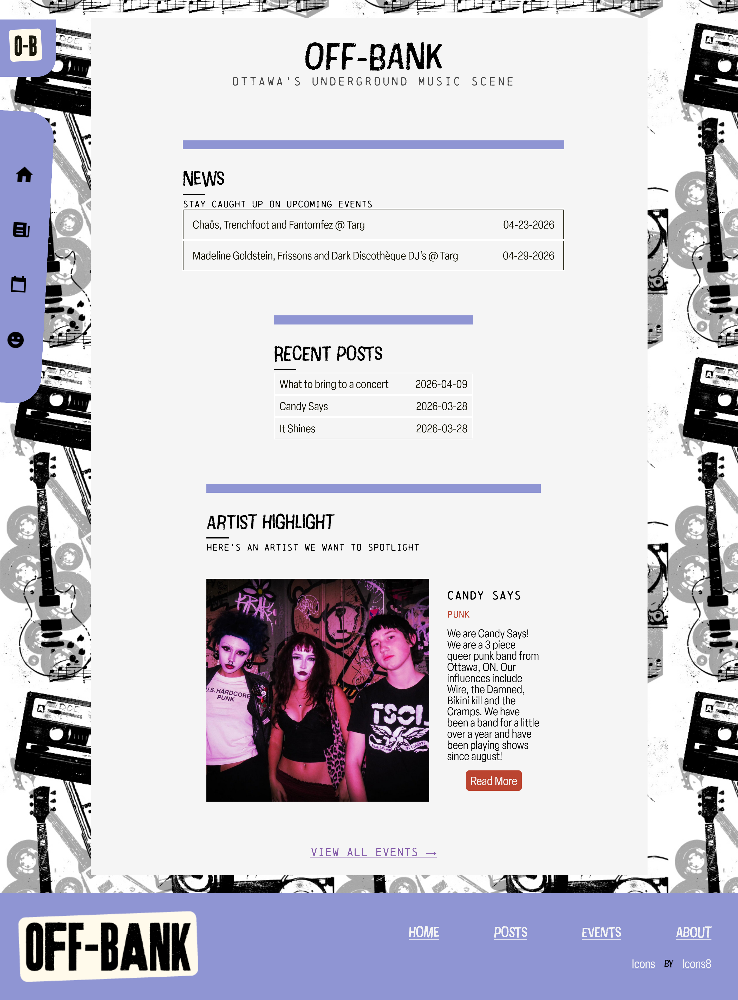
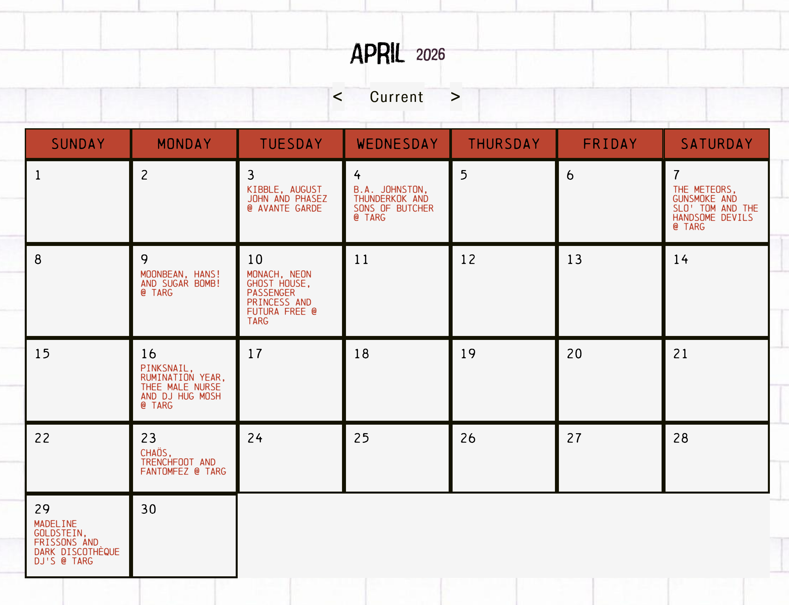
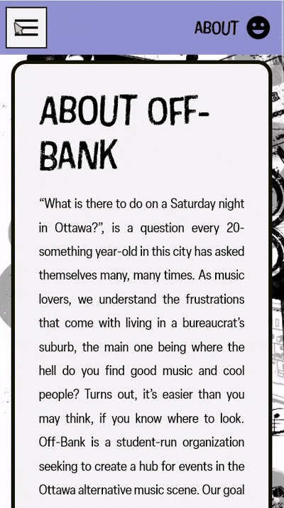

What is "Off-Bank"?
This is an ongoing project I have developed with two other Carleton students. It is an Ottawa-based alternative music blog/events list.
My Roles
What I did in this project
JavaScript
My main role in this project was to write all the JavaScript. For this project, JS was very integral, as it handles all the event and article posts, ensuring the site has content to display. I developed a system for making all blog and event posts with simple JSON data, and inserting it dynamically into the HTML document. This way it is easy to add content and it is dynamically pushed to the main site.
Project Setup and Management
In beginning this project, I took the initial lead in setting up the project and creating all the necessary infrastructure for the website. This involved document setup and template creation, CSS structure, and GIT/Github setup

Animations
In wanting to give this site greater visual appeal, I chose to add animations as well. I used a library called josh.js to efficiently add js-enabled animations to elements.